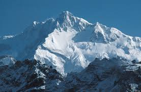

Kanchenjunga
Kanchenjunga
8.586m

Geografia
Tres de los cinco picos (principal, central y sur) están en la frontera del distrito de Sikkim Norte de Sikkim, India y el distrito de Taplejung de Nepal, mientras que los otros dos están completamente dentro del distrito de Taplejung. Nepal es el hogar del Proyecto de la Zona de Conservación Kanchenjunga que lleva a cabo el World Wildlife Fund en asociación con el gobierno de Nepal.1 El santuario es el hogar del panda rojo y otros animales de alta montaña, así como de centenares de especies de pájaros y plantas. El lado indio del Kanchenjunga también tiene una zona de parque protegida llamada el Parque Nacional Khangchendzonga.
Primera ascension
25 de mayo de 1955
Primera ascension Invernal
11 de enero de 1986
Volver a Inicio